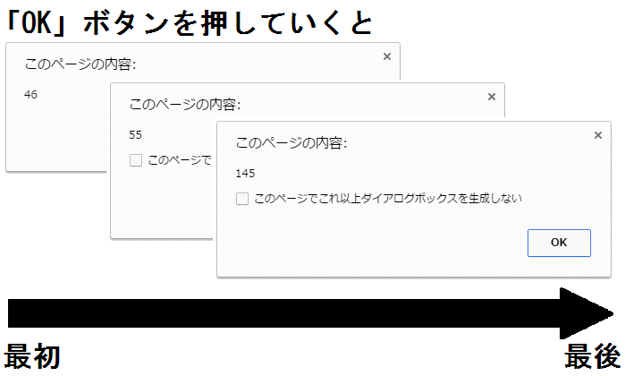

| はじめてのJavaScriptプログラミング | |
| 多羅樹 | |
| (2016) | |
「はじめてのJavaScriptプログラミング」をお買い上げいただきまして、誠にありがとうございました。
本書は、JavaScriptやプログラムにはじめて触れる人に向けた内容となっています。
覚えることも大切ですが、まずは「楽しむ」ことが上達の第一歩だと考えていますので、極力その点について気をつけながら執筆したつもりです。
是非、最後まで楽しみながらお付き合いいただけますと幸いです。
なお、文中には一部「HTML」の記述を用いざるを得ない箇所が多々あります。
特に意識しないでも問題が無いようにはしてありますが、「HTML」についても詳しく知りたい人は、本書の姉妹書「ゼロからはじめるWebサイト作り 〜HTMLはじめの一歩〜」を読んでみてください。
（本書と同じく、Kindleストアにてお買い求めいただけます）
本書に掲載するサンプルは、主に以下の環境で確認を行っております。
・MaxOS X 10.11.1 Chrome最新版
・Windows 10 Home バージョン：1511 Chrome最新版
これら以外の環境では、若干見栄えが異なる可能性がありますので、ご注意ください。
なお、本書のサンプルは全て「UTF-8」と言う文字コードで保存することを前提としています。
UTF-8での保存方法がわからない場合は、以下のキーワードを参考にしてGoogleなどで検索してみてください。
「エディタ名 UTF-8 保存」
例）サクラエディタ UTF-8 保存
メモ帳 UTF-8 保存
JavaScriptは、ズバリ「プログラミング言語」です。
そう、プログラムを作るための言語です。
世の中には様々なプログラミング言語が存在しますが、それらの中でもかなり人気があるのがJavaScriptです。
ちなみに「ジャバスクリプト」と読みます。
なお、世の中には「Java」と言う名前が良く似た言語も存在するのですが、JavaScriptとJavaは全くの別物なので混同しないよう注意してください。
JavaScriptは、手軽に始められ、比較的覚えやすいことから年々その人気が高まっています。
しかし、JavaScriptは手軽さに反して非常にパワフルで奥深い言語なため、基礎を疎かにして小手先で覚えてしまうと後々にとても痛い目に合ってしまいます。
ですので、あせらず一歩一歩確実に覚えるようにして行きましょう。
とは言うものの、あまり過度な心配はいりません。
本書冒頭でも述べた通り、プログラミング上達のコツは楽しむことです。
まずは、JavaScriptの手軽さを最大限に活かして、存分に楽しむところから初めてみましょう。
JavaScriptは、主に「Webブラウザ上で動くプログラムを作るための言語」です。
Webブラウザとは、Internet ExplorerやGoogle Chromeなどの「Webサイト（ホームページ）を見るため」のアプリケーションなので、「Webサイト上で動くプログラムを作るための言語」とも言えます。
Webサイト上で動くプログラムと言っても多種多様ですが、例えば有名なところだとGoogleMapやGmailがあります。
それらの有名で高機能なWebサイトでも、JavaScriptは活躍しています。
とは言え、これらは極端な例です。
まずは、JavaScriptを使うと「HTML文書に様々な動きを加えられる」と理解してもらえればと思います。
ここで言う「様々な動き」とは、例えばボタンをクリックしたらメッセージが表示されるとか、一定の時間が経過したら背景の色が変わるとか、そう言ったものを想像してください。
HTML文書はその名の通り「文章を表すための物」なのですが、JavaScriptを使うことによって様々な動きを加えることが出来るのです。
「プログラムを作る」となると、準備が大変なイメージがあると思います。
一般的なイメージとしては、「専用のソフトウェアを買って、プログラムを動かすための準備をして・・・」のような感じでしょうか。
しかし、心配ご無用です。
JavaScriptでプログラムを作る場合、極端な表現をすれば「パソコン一台あればOK」です。
特別なソフトウェアは必要ありませんし、何か準備を行う必要もありません。
もっと正確な表現をするならば、「何らかのテキストエディタ」があれば、JavaScriptのプログラムは作れます。
例えばWindowsであれば、最初からインストールされている「メモ帳」でも問題ありませんし、Macでも最初からインストールされている「テキストエディット」で作ることができます。
要するに、あなたが普段使っているパソコンで、今すぐにでもJavaScriptのプログラムが作れると言うことです。
ですが、WindowsにしろMacにしろ、標準でインストールされているテキストエディタは本格的に使い出すと何かと不便な点があります。
なので、筆者のオススメのテキストエディタをご紹介します。
■Windowsの場合
サクラエディタ（http://sakura-editor.sourceforge.net/）
このエディタは開発現場のプロ達でも好んで使う人が多いぐらい、非常に高性能なエディタです。
しかも無料で使えるので、気軽に試してみてもらえればと思います。
■Macの場合
CotEditor（https://coteditor.com/）
日本製のエディタで、シンプルで非常に使いやすいエディタです。
こちらも無料なので、Macユーザーの人は是非試してみてください。
ここまでの説明で、JavaScriptのプログラムは何を使って作ればいいのかは理解してもらえたと思います。
では次に、いよいよ作ったプログラムの動かし方を説明します。
１－２で説明した通り、JavaScriptでは基本的に「Webブラウザ上で動くプログラム」を作ります。
ですので、何らかのWebブラウザがあれば、自分で作ったプログラムも動かせると言うことです。
また、WebブラウザはWindowsの場合はInternet Explorerが、Macの場合はSafariが最初からインストールされているため、何も特別な準備は必要ないと言うことになります。
しかし、JavaScriptのプログラムは、それ単体では動きません。
これも１－２で説明している通り、JavaScriptは「Webサイト上で動くプログラム」なので、基本的にはHTMLファイルとセットで動作させる必要があります。
とは言え、HTMLも何か特別な環境を用意しなくても作成し、動作させることが可能なので、何も特別な準備が必要ないことには変わりません。
なお、Windowsの場合、標準でインストールされているInternet Explorerよりも、Google Chromeを利用することを強くオススメします。
Google Chromeには非常に強力な「開発者ツール」が搭載されており、いずれプログラムの腕が上達した際にはとても便利な存在となります。
ですので、今のうちからGoogle Chromeを使うことに慣れておくことが望ましいでしょう。
さて、これで本書の「JavaScript基礎講座」は終わりです。
次からはいよいよ実践的な内容になりますが、あまり難しく考えなくて大丈夫ですので、是非楽しみながら読み進めてください。
また、可能であれば、読み進めるのと同時に本書の内容を自分でも実践してみてください。
変数とは、何らかの「値」を入れておくための「名前付きの箱」のような物です。
例えば、コンビニにあるカゴを思い浮かべてください。
買い物へいくと、カゴ（変数）へ商品（値）を入れていきますよね？
そのカゴ（変数）には、商品（値）を自由に出したり入れたりすることができます。
そして、支払いをする時に、カゴ（変数）から商品（値）を取り出して会計をする。
このように、買い物をする時のカゴのような働きをする物が、「変数」となります。
最初は何のために使うのかいまいちピンと来ないと思いますが、変数はプログラミングを行う上で非常に重要な要素となるため、しっかり理解しておきましょう。
JavaScriptでは、次のような書き方で変数を用意します。
ちなみに、このように「変数を用意する」行為を、プログラミングの世界では「変数を宣言する」と言うので、覚えておいてください。
例：変数の宣言
let hensu1;
この例では、hensu1と言う名前の変数を用意しました。
最初に「let」と書いて、その後ろに半角のスペースを一つ書いて、さらにその後ろに変数の名前を書くルールになっています。
変数の名前は半角のアルファベット、半角の数値、半角のアンダースコア（半角のアンダーバー）、半角のドル記号で構成されていて、かつ数字から始まってはいけないと言うルールがあります。（一部、ルールを満たしていても使用できない名前があります）
また、変数宣言に限った話ではないのですが、JavaScriptでプログラムを書く場合、末尾に必ずセミコロン（;）を付けると言うことも合わせて覚えておいてください。
なお、次のような書き方をすると、複数の変数を一気に宣言することが出来ます。
例：複数の変数宣言
let hensu1,hensu2,hensu3;
この例では、hensu1、hensu2、hensu3と言う名前の変数を用意しました。
変数名を半角のカンマで区切って、必要な分だけ変数名を書けばOKです。
では次に、用意した変数に何か値を入れてみたいと思います。
この「変数に値を入れる」と言う行為は、プログラミングの世界では「代入」と言います。
例：値の代入
let hensu1,hensu2;
hensu1 = 100;
hensu2 = 'あいうえお';
値の代入は半角のイコール（=）で行います。
変数名、半角のスペース、半角のイコール、半角のスペース、変数に代入する値の順番で書きます。
この例では、hensu1には「100」を、hensu2には、「あいうえお」をそれぞれ代入しています。（「あいうえお」の前後に付いている「'」はこの先で説明するので、今はあまり気にしないでください）
なお、JavaScriptでは、変数の宣言と同時に値を代入することも可能です。
例：変数宣言と値の代入を同時に行う
let hensu1 = 100,hensu2 = 'あいうえお';
let hensu3 = 200;
let hensu4 = 'かきくけこ';
さて、変数についての説明はひとまずここまでになります。
定義した変数は一体どのような時に使うのか、どのように使うのかはこの先々で多々出て来ますので、今のところは「宣言」と「代入」についてしっかり覚えておきましょう。
JavaScriptでは、プログラムで扱う値の一つ一つが、それぞれどのような種類なのかが決められています。
例えば、「100」ならば「数値」、「あいうえお」なら「文字列」となります。
そして、この「数値」とか「文字列」が「データ型」です。
JavaScriptのデータ型には様々な種類が存在するのですが、まずは次の３つを理解してください。
①文字列型
いわゆる「文字」をプログラムで扱う場合、その値は全て「文字列型」となります。
なお、JavaScriptでは文字列を表す際に、値の前後をシングルクォーテーション（'）かダブルクォーテーション（"）で囲う必要があります。
どちらを使っても構いませんが、囲う前後で異なるクォーテーションを使うことは出来ないので注意してください。
例：文字列型
let moji1 = 'あいうえお';
let moji2 = "かきくけこ";
なお、この文字列に限り、全角の文字が使用できると思ってください。
基本的にJavaScriptでのプログラミングでは全ての記述を半角文字で記載しますが、このクォーテーションで囲った文字列のみ、全角の入力が許可されます。
②数値型
何らかの数字をプログラムで扱う場合、その値は「数値型」となります。
実数も小数も、10進数も16進数も8進数も、全て引っくるめて「数値」として考えてください。
なお、これら数値もシングルクォーテーション、またはダブルクォーテーションで囲うと「文字列」として扱われますので、注意してください。
例：数値型
let suchi1 = 10;
let suchi2 = 3.14;
③真偽型
これは日常生活ではあまり聞かない言葉かもしれません。
しかし、プログラミングの世界では非常に重要な考え方なので、しっかり理解しておきましょう。
真偽型は、「true」と「false」と言う二種類の値を管理するための型で、それぞれtrueが「真」を、falseが「偽」を意味します。
trueもfalseもシングルクォーテーションやダブルクォーテーションで囲う必要はなく、逆に囲ってしまうと数値型と同じく「文字列」として扱われますので、注意してください。
なお、どのような場合にこれらの値を使うのかは、プログラムを書くにつれて自然と身に付くと思いますので、今はまだあまり深く考えなくて大丈夫です。
例：真偽型
let flg = true;
let flg2 = false;
データ型については、一旦ここまでにしておきましょう。
本当はもっともっと複雑でややこしい要素もあるのですが、まずはここで説明した３種類の型が基本となりますので、しっかりと理解しておいてください。
配列とは、いくつかの値をひとまとめにして扱うための仕組みです。
JavaScriptでプログラミングを行うと、この配列を使うケースが多々あるため、しっかりと理解しておきましょう。
まずは、配列を準備する方法から説明して行きます。
配列の準備方法はいくつか種類があるのですが、まずはスタンダードなやり方を覚えましょう。
例：配列の準備
let arr = ['あいうえお', 'かきくけこ', 'さしすせそ'];
let arr2 = [100, 200, 300, 400, 500];
この例では、arrと言う名前の変数に対して「あいうえお」「かきくけこ」「さしすせそ」と言う3つの文字列を扱う配列を代入しました。
また、arr2と言う名前の変数に対しては、「100」「200」「300」「400」「500」と言う５つの数値を扱う配列を代入しました。
配列は次のルールに則って準備します。
・半角の角括弧（[ ] これをブラケットと言います）で配列で扱う全ての値を囲う
・ブラケットの中で、配列で扱う値を半角のカンマ（,）で区切って指定する
なお、配列で扱える値の個数の上限はあると言えばあるのですが、数千程度の数では無いため、とりあえず今の所は「いくらでも扱える」と考えてもらって問題ありません。
次に、配列でまとめた値の管理について説明して行きます。
配列は「どの配列」の「何番目」に「どんな値」が入っているか、と言う考え方をします。
ここでとても重要な点として、配列の「何番目」と言う順番は1からではなく0から始まると言うことです。
例えば、「arr」と言う配列の「2番目」には「さしすせそ」と言う値が入っている、と言った感じです。
先に挙げた例で考えると、変数「arr」には、次のように値が管理されています。
・0番目には「あいうえお」
・1番目には「かきくけこ」
・2番目には「さしすせそ」
このようになっています。
この「順番を0番目から数える」と言う考え方は、JavaScriptの配列に限った話ではなく、プログラミングの世界では共通的な常識のような考え方なので、必ず覚えておいてください。
配列の説明はここまでとします。
変数と同じく、どのような時に使うのか、どのように使うのかはこの先々で説明して行きますので、まずはここで説明したことをしっかりと理解しておいてください。
コメントとは、プログラムで実行する処理とは別に、プログラムの作り手や読み手に向けた「メモ」を書き残すような仕組みです。
例えば、「この処理はこんな動きをします」とか、「この変数はこのような用途で使います」と言った使い方をします。
言葉ではいまいち理解し辛いと思いますので、まずは以下の例を見てみましょう。
例：コメント
let hensu1,hensu2;// 変数を2つ宣言します ①
/*
ここで変数に ②
値を代入します
*/
hensu1 = 100;
hensu2 = 'あいうえお';
// hensu1 = 10000; この行は実行されません ③
JavaScriptには、２通りのコメントの書き方が用意されています。
一つは例の①のように、半角のスラッシュ（/）を２つ続ける書き方です。
この書き方は、単一行のコメントを書く場合に利用します。
もう一つは、②のように、半角スラッシュと半角のアスタリスク（*）と、半角のアスタリスクと半角のスラッシュで囲う書き方です。
この書き方を行うと、それぞれの間にある行全てがコメントになるため、主に複数行のコメントを書く場合に利用します。
なお、冒頭で説明した通り、コメントはプログラムで実行する処理とみなされないため、③のような使い方も出来ます。
プログラムのコードとみなされる行でも、コメントにすれば実行されなくなるため、「記述自体は消したくないけど、一時的に実行させないようにしたい」ような場合によく使われます。
ここから先、例を書く際にはコメントをガンガン活用して行きますので、まずはそれらを見ながら慣れて行ってください。
コメントの説明は以上になります。
ここまでの一通りの説明で、JavaScriptでプログラミングを行うための本当に「最低限」のことを説明して来ました。
次からは、いよいよプログラムの「処理」について触れて行きます。
繰り返しになりますが、楽しんで読み進めてくださいね。
インターネットをしていると、何らかのタイミングでメッセージのダイアログが表示されることがありますよね。
例えば、こんな感じの物です。
JavaScriptプログラミングの第一歩は、これらメッセージダイアログを表示させるところから初めてみましょう。
なお、ここからは「実際に動くサンプル」を用いて、必要なことを随時説明して行く形式を取ります。
あなたが普段使っているパソコンで、例と全く同じ内容をエディタで書いて「htmlファイルとして（拡張子を.htmlにして）」保存して、そのままファイルをダブルクリックすれば動作するはずなので、是非試してみてください。
では、まずは「OK」ボタンが一つ付いているダイアログを表示させてみましょう。
この処理はalertと言う命令を使います。
では、早速例を見て行きましょう。
例：alertによるメッセージダイアログの表示
<!DOCTYPE html>
<html>
<head>
<metacharset="utf-8">
<title>メッセージダイアログの表示</title>
<script>
// メッセージダイアログを表示する
alert('こんにちは！'); ①
</script>
</head>
<body>
<h1>メッセージダイアログの表示</h1>
</body>
</html>
この例をファイルに保存してブラウザで表示すると、画面が表示される際に「こんにちは！」と書いてあるメッセージダイアログが表示されます。
※日本語が文字化けしてしまう場合は、htmlファイルの文字コードをutf-8で保存し直してください（以後、全て同様です）
非常に簡単な例ですが、これも立派なプログラムです。
例の①の通り、JavaScriptのプログラムは、htmlのscriptタグの中に書くことによって動作します。（違う場所に書くやり方もありますが、本書では触れません）
この例では、scriptタグの中で先に説明したalertと言う命令を使って、メッセージダイアログを表示させています。
なお、このalertのように、何か処理をするために使う命令を「関数」と呼びますので、覚えておいてください。
alert関数は、カッコの中に与えた値をメッセージダイアログで表示します。
また、関数のカッコの中に変数を書くと、変数の中に代入されている値を表示します。
ちなみに、何らかの関数のカッコの中に書く値のことを、プログラミングの世界では「引数（ひきすう）」と呼びますので、これも必ず覚えておいてください。
例：alertで変数の中身を表示する
<!DOCTYPE html>
<html>
<head>
<metacharset="utf-8">
<title>メッセージダイアログの表示</title>
<script>
// 変数を宣言して、値を代入する
let hensu = 'こんばんは！'; ①
// 変数の中身をダイアログで表示する
alert(hensu); ②
</script>
</head>
<body>
<h1>メッセージダイアログの表示</h1>
</body>
</html>
この例をファイルに保存してブラウザで表示すると、画面が表示される際に「こんばんは！」と書いてあるメッセージダイアログが表示されます。
例の①で変数を宣言し、②では宣言しておいた変数をalert関数で表示しているからです。
この例のように、変数に代入しておいた値は、いつでも好きな時に使うことが出来ます。
「予めカゴの中に入れておいた値を、好きな時に取り出して使い、またカゴの中にしまう」
このようにイメージしてもらうといいかもしれません。
では次に、別のメッセージダイアログを紹介します。
alert関数では「OK」と言うボタンが一つ付いているメッセージダイアログを表示しましたが、confirm関数を使うと「OK」と言うボタンと「キャンセル」と言うボタンが付いたメッセージダイアログを表示出来ます。
これは、Webサイトの利用者に対して何かの確認を行う場合に利用されます。
例：confirmによるメッセージダイアログの表示
<!DOCTYPE html>
<html>
<head>
<metacharset="utf-8">
<title>メッセージダイアログの表示</title>
<script>
// 確認ダイアログを表示する
confirm('確認メッセージです！');
</script>
</head>
<body>
<h1>メッセージダイアログの表示</h1>
</body>
</html>
confirm関数で表示したダイアログでは、利用者が「OK」を押したのか、それとも「キャンセル」を押したのかによって、その後に続く処理を分岐させるのが一般的です。
例えば、「次のページに進みますか？」とメッセージを表示して、「OK」が押されたら次のページに移動し、「キャンセル」が押された場合はそのページに留まるようなイメージです。
このような使い方は、この先で説明して行きますので、今はconfirm関数でメッセージダイアログを出す方法について覚えておいてください。
最後に、alert関数やconfirm関数とは違い、利用者に何かを入力してもらうためのメッセージダイアログを紹介します。
prompt関数を使うと、そのようなダイアログを表示することが出来ます。
例：promptによるメッセージダイアログの表示
<!DOCTYPE html>
<html>
<head>
<metacharset="utf-8">
<title>メッセージダイアログの表示</title>
<script>
// 入力ダイアログを表示する
prompt('名前を入力してください', '例）たろう');
</script>
</head>
<body>
<h1>メッセージダイアログの表示</h1>
</body>
</html>
さて、例を見て気が付いた人もいると思いますが、prompt関数の引数が、alert関数やconfirm関数と異なっていると思います。
これは、半角のカンマで区切ることによって、関数に引数を２つ渡しているのです。
そして、prompt関数では、最初の引数をダイアログ上のメッセージとして、二つ目の引数を入力エリアの初期値（最初から表示されている値）として扱います。
なお、二つ目の引数は、不要であれば省略しても構いません。
また、prompt関数で表示したメッセージダイアログに入力された内容を使う方法については、confirm関数と同じくこの先で詳しく説明して行きます。
メッセージダイアログの説明は以上になります。
JavaScriptには、３種類のメッセージダイアログ表示方法があることがわかったと思いますので、用途に応じて使い分けてみてください。
プログラムと言うものは、条件分岐の集合体と言っても過言ではありません。
「何」が「どんな状態」の場合に「どんな処理を行うか」、このような判断の積み重ねによって、プログラムは構築されます。
これが例えゲームになったとしても同じことで、「十字キーの右が押されたら、キャラクターを右に動かす」と言ったイメージになります。
ここでは、この一つ先に触れたconfirm関数とprompt関数の実際の使い方と一緒に、条件分岐について説明して行きます。
まずは、confirm関数で表示したメッセージダイアログで、押されたボタンごとに処理を分岐させてみましょう。
見慣れない記述が出てくると思いますが、とりあえず気にせず読み進めてください。
例：押されたボタンごとに処理を分岐させる
<!DOCTYPE html>
<html>
<head>
<metacharset="utf-8">
<title>条件分岐</title>
<script>
// 変数を宣言する
let kekka;
// 確認ダイアログを表示して、結果を
// 変数に代入する
kekka = confirm('処理を進めていいですか？'); ①
// 確認ダイアログの結果ごとに処理を分岐させる
if (kekka == true) { ②
// OKボタンが押された場合に実行する処理
alert('OKが押されました');
}else {
// OKボタンが押された場合以外に実行する処理
alert('キャンセルが押されました');
}
</script>
</head>
<body>
<h1>条件分岐</h1>
</body>
</html>
この例を動かすと、まず画面が表示される際に「処理を進めていいですか？」と言う確認のダイアログが表示されます。
そして、ダイアログで「OK」ボタンを押すと「OKが押されました」と言うメッセージダイアログが、「キャンセル」ボタンを押すと「キャンセルが押されました」と言うメッセージダイアログがそれぞれ表示されます。
とてもシンプルな例ですが、これも立派な条件分岐です。
この例では、着目すべき点が２つあります。
①の行では、要約すると「利用者がダイアログで押したボタンの種類を、kekkaと言う変数に代入する」と言うことを行っています。
実は、confirm関数は「押されたボタンがどちらなのか」を判断するための「結果」を「返却」してくれます。
confirm関数では、OKボタンが押された場合は真偽値の「true」を、それ以外の場合は「false」を返却してくれるのです。
また、返却された値は、例のような書き方でそのまま変数に代入することが可能です。
ちなみに、このように何らかの関数が返却する結果を、プログラミングの世界では「戻り値（もどりち）」と呼びます。
そして、②の行以下で行っているのが、いわゆる「条件分岐」です。
JavaScriptの条件分岐は、基本的に「if〜else」と言う構文を使います。
訳すと「もし〜他には〜」となるので、比較的覚えやすいですね。
この構文は通称「if文（いふぶん）」と呼ばれているので、この呼び方には慣れておきましょう。
なお、この構文のルールは、以下の点を念頭に置いた上で、細かいところは「形」で覚えてください。
プログラミングをしていれば何度も何度も書くことになるので、必ず覚えられます。
・「if」のカッコの中に条件を書き、その条件に該当する時に行う処理をそのあとの波括弧（{ }）の中に書く
・「if」の条件に該当しない場合に行う処理は、「else」の波括弧の中に書く
・「else」が不要な場合は書かなくてよい
さて、if文について説明したところで、次は「条件」の書き方について説明します。
「条件」と言っても様々なものが存在しますが、まずは以下について覚えておきましょう。
■「何か」と「何か」が同じ値であるかどうか
この条件には「==」と言う演算子を使います。
例えば、変数の「hensu」に代入されている値が「1」である、と言うような条件を書く場合は以下のようになります。
if (hensu == 1) {
～略～
}
なお、イコールが一つの場合は前述の通り「代入」として扱われてしまいますので、注意してください。
■「何か」と「何か」が異なる値かどうか
この条件には「!=」と言う条件を使います。
例えば、変数の「hensu」に代入されている値が「1」以外である、と言うような条件を書く場合は以下のようになります。
if (hensu != 1) {
～略～
}
■「何か」の値が「何か」より大きい、または小さい（未満）かどうか
この条件には「>」または「<」を使います。
例えば、変数の「hensu」に代入されている値が「1」よりも大きい、と言うような条件を書く場合は以下のようになります。
if (hensu > 1) {
～略～
}
また、変数の「hensu」に代入されている値が「1」よりも小さい、と言うような条件を書く場合は以下のようになります。
if (hensu < 1) {
～略～
}
■「何か」の値が「何か」以上、または以下かどうか
この条件には「>=」または「<=」を使います。
例えば、変数の「hensu」に代入されている値が「1」以上、と言うような条件を書く場合は以下のようになります。
if (hensu >= 1) {
～略～
}
また、変数の「hensu」に代入されている値が「1」以下、と言うような条件を書く場合は以下のようになります。
if (hensu <= 1) {
～略～
}
いかがでしょうか？
ここで紹介した演算子が使えれば、ある程度の条件分岐は書けるようになるので、しっかり覚えておきましょう。
続いて、複数の条件を組み合わせて判断する方法にも少し触れておきます。
少し難しい話になってしまいますが、とても利用頻度の高い書き方なので、先に紹介した条件の書き方を合わせてしっかり覚えておきましょう。
■「何かの条件」と「何かの条件」を共に満たすかどうか
この条件には「&&」を使います。
例えば、変数の「hensu1」に代入されている値が「1」で、かつ「hensu2」に代入されている値が「2」、と言うような条件を書く場合は以下のようになります。
if (hensu == 1 && hensu2 == 2) {
～略～
}
このように書くと、「hensu1 == 1」と「hensu2 == 2」を共に満たす場合にのみ処理が実行されます。
どちらか一方でも条件を満たさない場合は、処理が実行されません。
■「何かの条件」と「何かの条件」のどちらかを満たすかどうか
この条件には「||」を使います。
例えば、変数の「hensu1」に代入されている値が「1」、または「hensu2」に代入されている値が「2」、と言うような条件を書く場合は以下のようになります。
if (hensu == 1 || hensu2 == 2) {
～略～
}
このように書くと、「hensu1 == 1」と「hensu2 == 2」のどちらか一方でも満たす場合に処理が実行されます。
どちらとも条件を満たさない場合には処理が実行されません。
さて、以上で条件の書き方も一通り説明出来たと思うので、最後にprompt関数で表示したダイアログで、利用者が入力した値に応じた分岐をさせてみたいと思います。
今回も見慣れない記述が出てきますが、まずは気にせず読み進めてください。
例：入力された値ごとに処理を分岐させる
<!DOCTYPE html>
<html>
<head>
<metacharset="utf-8">
<title>条件分岐</title>
<script>
// 変数を宣言する
let kekka;
// 入力ダイアログを表示して、入力内容を変数に代入する
kekka = prompt('あなたは中学何年生ですか？', '1～3の間で入力してください');
// 変数に代入されている値ごとに処理を分岐させる
switch (kekka) { ①
case '1' :
// 「1」と入力された場合に実行する処理
alert('１年生ですね。中学校は楽しいですか？');
break; ②
case '2' :
// 「2」と入力された場合に実行する処理
alert('２年生ですね。来年は受験ですね。');
break;
case '3' :
// 「3」と入力された場合に実行する処理
alert('３年生ですね。中学校生活もあと少しですね。');
break;
default:
// 入力が「1」でも「2」でも「3」でもない場合に実行する処理
alert('入力が正しくありません');
break;
}
</script>
</head>
<body>
<h1>条件分岐</h1>
</body>
</html>
この例を動かすと、まず画面が表示される際に「あなたは中学何年生ですか？」と言う入力のダイアログが表示されます。
そして、ダイアログで何らかの入力を行った後に「OK」ボタンを押すと、入力値にごと異なるメッセージダイアログが表示されます。
（何を入力したらどのような結果になるかは、実際に自分で動かして確かめてみてください）
この例で着目すべき点は、何と言っても①の行にあるswitchを言う命令のカタマリです。
これは、if文ではない、もう一つの条件分岐のための構文です。
if文と比べて、いくつかの条件をまとめて指定したい時によく利用されます。
この構文のルールもif文と同じく、以下の点を念頭に置いた上でまずは「形」で覚えてください。
・「switch」のカッコの中に、条件に使用する変数を書く
・「case」の後ろに、条件指定した変数を分岐させる値を書き、その後ろに半角のコロン（:）を付ける
・条件に応じた処理の最後には必ず「break;」と書く
・「default」は、caseのどの条件にも該当しない場合に行う処理を書くための物で、不要であれば省略可能
条件分岐の説明は、一旦ここまでにしておきます。
ここで説明した処理（記述）はこの先も随所で出てきますので、何度も繰り返し見たり書いたりすることで、自ずと身に付くことでしょう。
処理の繰り返しは、条件分岐と並んでプログラミングの土台となるものです。
ここでは、先に説明した配列と合わせて、処理の繰り返しについて説明して行きます。
JavaScriptの繰り返し処理は、用途に応じていくつか種類がありますが、まずは代表的な２つについて学びましょう。
まず１つ目は、予め繰り返したい回数が決まっている場合に使う「for文（ふぉーぶん）」について説明します。
このfor文を使って、配列の中身を確認するプログラムを作ってみましょう。
例：繰り返し処理を用いて配列の中身を確認する
<!DOCTYPE html>
<html>
<head>
<metacharset="utf-8">
<title>繰り返し</title>
<script>
// 配列を宣言する
let arr = [100, 200, 300, 400];
// 配列に代入されている値の数だけ処理を繰り返す
for (let i = 0; i < 4; i++) { ①
// 繰り返し実行する処理
alert(arr[i]); ②
}
</script>
</head>
<body>
<h1>繰り返し</h1>
</body>
</html>
この例を動かすと、「100」「200」「300」「400」と、計4回のメッセージダイアログが表示されます。
alert関数の実行を、4回「繰り返している」からです。（②の行の処理が4回実行されています）
では、例の①の行の記述を参考に、先ほど紹介したfor文について詳しく見て行きましょう。
for文は、大きく以下の３つの要素で構成されています。
・「for」と言う記述
・カッコで囲まれた「繰り返し条件」
・波括弧（{ }）で囲まれた繰り返し実行する処理
これら３つの中で、まず先頭はお約束、最後は先に説明したif文と同じ意味合いです。（条件に該当する際に実行する処理は波括弧で囲ってましたよね）
ですので、２つ目の「繰り返し条件」について説明して行きます。
例では、この部分は以下のように書かれています。
let i = 0; i < 4; i++
これ、よく見てみると、３つの命令がまとめて書かれていることに気が付きませんか？
要するに、さっきの１文は以下のように分解出来ると言うことです。
let i = 0 ①
i < 4 ②
i++ ③
では、分解したそれぞれについて見て行きましょう。
①はすでにお馴染みの変数宣言です。
ここでは、繰り返し処理の判定に使うための変数を宣言して、初期値を代入しています。
そして、②では繰り返しの条件を明示しています。
for文では、①で宣言した変数が②の条件に該当する間処理を繰り返す、と言うルールになっています。
要するに、①と②を合わせると、「変数iが4未満の間は処理を繰り返す」と言う意味になります。
そして、何やら見慣れないことが書いてあると思いますが、③では「変数iの値を1ずつ加算する」と言う定義をしています。
変数iの初期値は0なので、処理を繰り返すたびに1ずつ加算されることになります。
これらをまとめると、例で定義したfor文は、次のルールに則り処理を繰り返していることになります。
・繰り返し判定に使う変数はiで、その初期値は0
・変数iが4未満の間、処理を繰り返す
・変数iは、処理が1回繰り返されるたびに、代入されている値が1加算される
と言うことは、「変数i はその値を0、1、2、3・・・と加算されて行き、4になった際に繰り返しが終了する」となりますので、結果として処理は4回繰り返されることになる訳です。
では次に、例で繰り返し実行された処理について見てみましょう。
例では、for文で繰り返し実行されていた処理は以下の通りでした。
alert(arr[i]);
これは、配列の中身をメッセージダイアログで表示する、と言うことをしている処理です。
alert関数の引数に書いてある記述に着目してください。
これが「配列の中身を参照する」方法です。
配列は、配列名の後ろにブラケット（[ ]）で何番目の値かを指定して、その中身を参照することが出来ます。
例ではブラケットの中に変数iが指定されているため、繰り返し実行される処理は
・arr[0]
・arr[1]
・arr[2]
・arr[3]
となります。
ですので、結果として「配列の中身を確認する処理」となっているのです。
では次に、もう一つの繰り返しのための構文、「while文」を説明して行きましょう。
ちなみに、「while」は日本語的には「ホワイル」とか「ファイル」とか「ワイル」とか呼ばれますので、気に入った呼び方をしてください。
for文は予め繰り返したい回数が決まっている場合に使用しますが、while文は、「ある条件が真（true）の間処理を繰り返す」と行った場合に使われます。
具体的なことは例を見てみましょう。
例：while文を使った繰り返し処理
<!DOCTYPE html>
<html>
<head>
<metacharset="utf-8">
<title>繰り返し</title>
<script>
// 変数を宣言して初期値を代入する
let i = 1;
// 変数iが4以下の間処理を繰り返す
while (i <= 4) { ①
// メッセージダイアログを表示する
alert(i + '回目'); ②
// 変数iの値を1加算する
i++;
}
</script>
</head>
<body>
<h1>繰り返し</h1>
</body>
</html>
この例を動かすと、「1回目」「2回目」「3回目」「4回目」と、計4回のメッセージダイアログが表示されます。
先に説明したfor文を理解していれば、何となく分かりやすいのではないでしょうか？
では早速ポイントを説明して行きましょう。
まず例の①では、繰り返し条件を書いています。
「while」のあとに半角のスペースを書いて、その後のカッコの中に条件を書くルールになっています。
例では、「変数iの値が4以下の間処理を繰り返す」と言う指定をしています。
次に②では、変数iの値と「回目」と言う文字列を連結（※）させて、メッセージダイアログで表示しています。
変数iの値は、メッセージダイアログを表示した後にfor文の時と同じ方法で値を1加算しているため、処理が繰り返されるたびに「1回目」「2回目」・・・と表示されるのです。
さて、処理の繰り返しについての説明は一旦ここまでとしますが、先の説明の※の部分で触れた値の連結のような「演算処理」について、最後に触れておきたいと思います。
プログラムでは様々な演算を行うことになりますが、最も多いのが「算術的な演算」と「文字列の連結」になります。
まず、「算術的な演算」と言うのは、いわゆる「足し算」や「引き算」などの「計算」だと考えてください。
JavaScriptでは、単純な四則演算から本格的な算術演算まで様々な計算が行えますが、まずは最もスタンダードな以下の４つを覚えておきましょう。
・足し算は「+」で行う
・引き算は「-」で行う
・掛け算は「*」で行う
・割り算は「/」で行う
なお、使い方は以下の通りです。
let hensu1 = 1 + 2;// 3
let hensu2 = 5 - 3;// 2
let hensu3 = 2 * 4;// 8
let hensu4 = 9 / 3;// 3
次に「文字列の連結」は、先の例でも書いた通り「何らかの文字列」と「何らかの文字列」を結合させる処理で、例えば「あいう」と「えお」を連結して「あいうえお」と言う文字列にするような感じです。
これは、文字列と「何らかの型の値」を半角のプラス（+）で続けて書けばOKです。
let hensu = 'あいう' + 'えお';// あいうえお
ここで1点注意して欲しいのが、どんな型の値でも、文字列と連結した結果は文字列になってしまうと言う点です。
要するに、数値型の「1」と文字列型の「1」を「+」で演算すると、「2」ではなく「11」になると言うことです。
この点は混乱し易いので、十分に注意するようにしてください。
let hensu1 = 1 + '1';// 11
let hensu2 = '10' + true;// 10true
演算処理はここまでにしておきましょう。
繰り返し処理も演算処理も、条件分岐と同じくこれから先嫌と言うほど使うことになりますので、必ず自ずと身に付きます。
ですので、今はここで説明した内容をしっかりと覚えておくようにしましょう。
「関数」とは、一言で表すならば「処理の集まり」です。
もっと関数についてイメージしやすいように、日常生活に例えて説明しましょう。
役所へ住民票を受け取りに行くとします。
その際に必要な申込書を窓口へ届け出て、それを受け取った役所は、必要な書類を探したり印刷したりします。
そうして完成した住民票を、最後は自分が受け取ります。
ここに出てくる役割を、プログラム用語に置き換えると、以下のようになります。
・役所＝住民票を発行する手続き
・住民票＝関数の実行結果
・必要な申込書＝引数
・書類を探す、印刷する＝処理
その際、必要な申込書（引数）にミスがあった場合、住民票（関数の実行結果）が貰えないことがあるので注意が必要です。
また、関数と言うのは、alert関数のように予め用意されている物もありますが、自分で自由に作ることも出来ます。
ここでは、そのような「自作の関数」について覚えてもらいたいと思います。
「なぜ関数を作るのか？」と言う点について、具体例を挙げながら説明します。
例：同じ記述を何度も繰り返し書いている
<!DOCTYPE html>
<html>
<head>
<metacharset="utf-8">
<title>関数</title>
<script>
// 変数を宣言する
let hensu1 = 1;
// 処理を10回繰り返す
for (let i = 0; i < 10; i++) {
// hensu1 の値とiの値を足す
hensu1 = hensu1 + i;
}
// hensu1の値をメッセージダイアログで表示する
alert(hensu1);
// 変数を宣言する
let hensu2 = 10;
// 処理を10回繰り返す
for (let i = 0; i < 10; i++) {
// hensu2 の値とiの値を足す
hensu2 = hensu2 + i;
}
// hensu2の値をメッセージダイアログで表示する
alert(hensu2);
// 変数を宣言する
let hensu3 = 100;
// 処理を10回繰り返す
for (let i = 0; i < 10; i++) {
// hensu3 の値とiの値を足す
hensu3 = hensu3 + i;
}
// hensu3の値をメッセージダイアログで表示する
alert(hensu3);
</script>
</head>
<body>
<h1>関数</h1>
</body>
</html>

この例は、実行すると「46」、「55」、「145」と3回メッセージダイアログが表示されます。
処理そのものは、ここまで説明して来たことを理解出来ていれば、何も難しいことはないと思います。
しかし、何やら同じような処理ばかり書いてあって、無駄に記述が長くなっている気がしませんか？
同じような処理はひとまとめにしてスッキリさせたくなりませんか？
（若干強引な気もしますが）そう、こんな時がまさしく関数の出番なのです。
では、早速先ほどの例を関数を使ったバージョンに書き換えてみましょう。
例：同じ処理を関数にまとめる
<!DOCTYPE html>
<html>
<head>
<metacharset="utf-8">
<title>関数</title>
<script>
// 関数を自作する
function myFunction(hikisu) { ①
// 引数の値を取得する
let temp = hikisu;
// 処理を10回繰り返す
for (let i = 0; i < 10; i++) {
// 退避した引数の値とiの値を足す
temp = temp + i;
}
// 戻り値を返却する
return temp; ②
}
// 自作した関数を呼び出す ③
let hensu1 = myFunction(1);
let hensu2 = myFunction(10);
let hensu3 = myFunction(100);
// メッセージダイアログを表示する
alert(hensu1);
alert(hensu2);
alert(hensu3);
</script>
</head>
<body>
<h1>関数</h1>
</body>
</html>
いかがでしょうか？
実行すると先の例と全く同じ動作をしますが、だいぶプログラムがスッキリしたと思いませんか？
感じ方は人それぞれかもしれませんが、少なくとも何度も同じ記述を繰り返しているような要素は無くなったと思います。
※本当はもっとスッキリさせられるのですが、今回は各種説明のために今の書き方になっています
では、今回もポイントの説明をして行きましょう。
まず①ですが、ここで関数の作成をしています。
「function」と言う記述と半角のスペースの後に任意の関数名を付けて、カッコの中に引数を扱う変数の名前を書きます。
なお、引数を必要としない場合はカッコだけ書き、逆に複数必要とする場合はカッコの中にカンマで区切って必要な数だけ記述します。
そして、if文やfor文などと同じように、関数で実行する処理はいつもの波括弧で囲って記述します。
次に、②では戻り値の返却をしています。
関数の呼び出し元に戻り値を返却する場合は、「return」と言う記述と半角のスペースの後に、返却する値を書きます。
戻り値が不要な場合は記述する必要はありません。
最後に、③では自作した関数の呼び出していますが、これはalert関数などの予め用意されている物の呼び出し方と何も変わりません。
関数は、今回のような「似たような記述をまとめる」と言った用途以外にも、よく使われる処理を予め関数として準備しておいたり、プログラムを読みやすくするために処理を関数に分割しておいたりと、様々な用途があります。
また、JavaScriptを詳しく理解しようとすると、この「関数」と言う存在は非常に難解な物となります。
とは言え、まずはここで説明した内容が基礎になりますので、今のところは例にも書いた
・自作関数の作り方
・引数の受け取り方
・戻り値の返し方
これらをしっかりと理解しておくようにしましょう。
さて、ここからはHTMLも絡めた「より実践的」な内容になって行きます。
今まで説明して来た内容と比べて、「より動かしている」感じがすると思いますので、張り切って行きましょう。
まずは第一弾として、ボタンを押したら文字や背景の色が変わるプログラムを作ってみたいと思います。
例：ボタンを押したら文字や背景の色が変わる
<!DOCTYPE html>
<html>
<head>
<metacharset="utf-8">
<title>文字や背景の色を変える</title>
<script>
// 「こんにちは」の文字色と背景色を変える処理
function func1() {
// 文字色を変える
document.getElementById('moji1').style.color = 'red'; ②
document.getElementById('moji2').style.color = 'black';
// 背景色を変える
document.bgColor = '#90ee90'; ③
}
// 「こんばんは」の文字色と背景色を変える処理
function func2() {
// 文字色を変える
document.getElementById('moji1').style.color = 'black';
document.getElementById('moji2').style.color = 'red';
// 背景色を変える
document.bgColor = '#00ffff';
}
</script>
</head>
<body>
<h1>文字や背景の色を変える</h1>
<pid="moji1">こんにちは</p>
<pid="moji2">こんばんは</p>
<inputtype="button"value="こんにちは"onclick="func1()"> ①
<inputtype="button"value="こんばんは"onclick="func2()">
</body>
</html>
今回のプログラムのポイントは３点です。
まず①では、htmlで用意したボタンに対して「クリックされたらこの関数を実行しなさい」と言う指定をしています。
次に②では、文字の色を変える処理を行っています。
色々と複雑なことが書かれていると思いますが、まずは次の２つを覚えて、あとは「お約束」として捉えておいてください。
・getElementByIdと言う関数の引数に、処理の対象とするhtmlタグのID名を指定する
・式の右辺（=の右）に変えたい色を指定する
最後に③では、画面の背景色を変える処理を行っています。
「document.bgColor」と言う変数みたいな物（※）に代入した値が、画面の背景色に反映されることを覚えておきましょう。
なお、文字色も背景色も、指定可能な値はCSSで利用可能な「色名」や「カラーコード」となります。
よくわからない人は、「色見本」と言うキーワードでググったサイトから目的の色を探しだして、その色の「#」から始まる値を使うようにすればいいでしょう。
※・・・プロパティと言いますが、一旦は「変数みたいな物」と言う認識で構いません
いかがでしょうか、「ボタンを押す」と言うアクションが加わると、一気に本格的なプログラムを書いている気がして来ませんか？
ちなみに、ここからはしっかりと理解を深めるための「課題」を出しますので、例の内容を自分で改造して、実際に動かして、色々と試すようにしてみてください。
（課題の答えは巻末に掲載しています）
【課題】
・func3関数を追加する
・func3関数では、背景色を「赤」に変え、「こんにちは」と「こんばんは」の文字色を「白」に変更する
・func3を呼び出すためのボタンを追加する
「より実践的」な内容の第二弾は、タイマー処理です。
タイマー処理とは、「ある一定の時間が経過したら処理を行う」とか「ある一定の時間おきに処理を繰り返す」と言うような物を指します。
業務用のWebサイトではあまり出番がありませんが、ブラウザゲームを作る際には大活躍する機能です。
ゲームを作ってみたい人は、是非使いこなせるようになってください。
では早速例を見てみましょう。
タイマー処理を使って、1秒おきに画面上の数値に1加算して行くプログラムです。
正直なところ、何の面白みも無いプログラムのくせににちょっと難易度が高めになっていますが、基本的な書き方となるのでしっかり理解できるよう頑張ってください。
例：1秒おきに画面上の数値に1加算する
<!DOCTYPE html>
<html>
<head>
<metacharset="utf-8">
<title>数値を加算する</title>
<script>
// 加算するための変数を宣言
let count = 0;
// 1秒おきに画面上の数値に1加算する
function countup() {
setInterval(function() { ②
count++;
document.getElementById('number').innerText = count; ③
},1000);
}
</script>
</head>
<bodyonload="countup()"> ①
<spanid="number">0</span>
</body>
</html>
いかがでしょう、恐らくはかなり「理解不能」に感じていると思います。
でも例えそうであったとしても、大丈夫、すぐに慣れます！
なので、とりあえず今まで通りポイントについて一つひとつ触れて行きましょう！
まず例の①ですが、ここでは「画面の読み込みが完了したらinit関数を実行しなさい」と言うことを書いています。
次に②ですが、ここに書いてある「setInterval関数」が今回の主役です。
この関数は、一つ目に指定した「関数」を、二つ目にしていした時間（ミリ秒）おきに実行します。 ※1000ミリ秒＝1秒
「引数に関数を渡す」と言う概念は非常に混乱すると思いますが、今のところは例で書いた「形」を覚えるようにして、引数で渡している関数に内容を用途に応じて書き換えるようにしてみると思います。
最後に③ですが、ここでは画面に用意したspanタグの内容を変数countの値に書き換えています。
「getElementById関数」は先に出てきた時と同じですが、「innerText」に対して値を代入すると画面上の表示内容を変更出来ると言うことを覚えておきましょう。
タイマー処理の説明は以上になります。
一気に難易度が上がったように感じているでしょうが、今は例の書き方を真似して、「ここをこう変えたら、こんな感じに動いた！」と言うようなことを繰り返してみることが大事です。
細かいことは後でいくらでも覚えられるので、今は自分で書いて動かして、楽しむことを優先しましょう。
と言うわけで、今回も課題を出します。
頑張ってチャレンジしてみてください。
【課題】
・画面上にボタンを用意する
・画面表示時に自動的にタイマー処理が始まるのではなく、用意したボタンを押したらタイマー処理が始まるようにする
・画面上の値が2ずつ加算されるようにする
プログラムでは、「実行するたびに異なる結果を得たい」と言うシチュエーションがあり、そんな時は「乱数」を使います。
乱数は、「ランダムな数値を生成するための仕組み」です。
比較的応用の効く仕組みなので、まずは基本的な使い方をしっかりと覚えましょう。
例：ボタンを押すたびに異なる数値を表示する
<!DOCTYPE html>
<html>
<head>
<metacharset="utf-8">
<title>ボタンを押すたびに異なる数値を表示する</title>
<script>
function show() {
// 0～9の間の整数をランダムで生成する
let ransu = Math.floor(Math.random() * 10); ①
// 生成した乱数をメッセージダイアログで表示する
alert(ransu);
}
</script>
</head>
<body>
<inputtype="button"value="乱数を表示する"onclick="show()">
</body>
</html>
さて、今までと違ってだいぶシンプルな例になっていますが・・・実は少しだけ複雑な処理をしています。
ポイントは①の１行だけなのですが、この１行で３つの処理を行っています。
まず、「Math.random」と言う関数で「0以上1未満の乱数値」を生成しています。
次に、生成した乱数に10を掛けています。
そして最後に、「Math.floor」と言う関数で、値の小数点以下の値を切り捨てています。
その結果、「0～9の間の整数をランダムで生成する」と言う処理を実現しています。
言葉だとわかりづらいと思いますので、図にして説明してみましょう。
Math.random()
↓ 乱数の生成
0.7185296065561431
↓ 10を掛ける
7.185296065561431
↓ Math.floor()で小数点以下を切り捨てる
7
重要なのは、「Math.random」関数が「0以上1未満の乱数値」を生成すると言う点です。
「0以上1未満」の乱数値が生成されるので、10を掛けて不要部分を切り捨てれば見事に「0～9の間の整数」がランダムで生成されると言うカラクリになっています。
とりあえず、「Math.floor(Math.random() * 10)」と言う一連の記述を覚えておけば応用が効くので、頑張って記憶してください。
では恒例の課題です。
【課題】
・ランダムで生成される値を「5〜10」の間の整数に変更する
さて、以上で「JavaScript実践講座」は終わりです。
次の「JavaScript応用講座」では、これまで以上にちゃんと動かせるプログラムを使って、色々なことを説明して行きます。
これまで以上に難しい分、動かした時の楽しさは比にならないぐらいの物になると思いますので、お楽しみに！
簡単なワリカン用プログラムです。
人数と金額を入力して「計算」ボタンを押すと、メッセージダイアログで
・一人あたりの支払い金額
・余り
を表示します。
サンプルなので、半角の数値以外の値を入力したりするとエラーになってしまいますが、必要最低限の動作はします。
なお、先にも触れていますが、このプログラム（以降も全て同様）を実際に作成する際には、htmlファイルの文字コードを「UTF-8」にすることを忘れないようにしてください。
<!DOCTYPE html>
<html>
<head>
<metacharset="utf-8">
<title>ワリカンプログラム</title>
<script>
function calculate() {
// 画面の入力値を取得する
let num = document.getElementById('number').value; ①
let bill = document.getElementById('bill').value;
// 一人あたりの金額と余りを算出する
let result = Math.floor(bill / num); ②
let remain = bill - result * num;
// 余りの有無に応じたメッセージ文言を作成する
let message = '一人あたりの支払金額は' + result + '円、'; ③
if (remain > 0) {
message += '余りが' + remain + '円です。';
}else {
message += '余りはありません。';
}
// ワリカン結果をメッセージダイアログで表示する
alert(message);
}
</script>
</head>
<body>
人数：<inputid="number"type="text"size="2">人<br>
金額：<inputid="bill"type="text"size="6">円<br>
<inputtype="button"value="計算"onclick="calculate()">
</body>
</html>
このプログラムにはポイントが3点あります。
①では、画面の入力値（人数と金額）を取得して、それぞれ変数に代入しています。
その際に、例えば人数では「document.getElementById('number').value」と言う書き方をしています。
getElementByIdは２－９でも説明しましたが、このように書くと「指定したID属性を持つinputタグの入力値」を取得出来るので、是非覚えておいてください。
次に、②では入力値を使って一人あたりの金額と余りを算出しています。
金額に小数が入らないように、「Math.floor」と言う関数を使って除算した結果を切り捨てているのがポイントです。
なお、JavaScriptでは切り捨て以外にも様々な計算用の関数が用意されていますので、気になる人は「JavaScript Math」のようにGoogleなどで検索してみてください。
そして、最後に③では余りが有るか無いかによって適切なメッセージが表示されるように、条件によって作成する文言を変えています。
２－１１で説明した乱数を使った簡単なおみくじプログラムです。
ボタンを押すと占い結果がメッセージダイアログで表示します。
<!DOCTYPE html>
<html>
<head>
<metacharset="utf-8">
<title>おみくじプログラム</title>
<script>
function divine() {
// 1～7の間の整数を生成する
let r = Math.floor(Math.random() * 7);
let fortune;
// 生成した乱数の値ごとにおみくじ結果を決定する
switch (r) {
case 0:
fortune = '大吉';
break;
case 1:
fortune = '吉';
break;
case 2:
fortune = '中吉';
break;
case 3:
fortune = '小吉';
break;
case 4:
fortune = '末吉';
break;
case 5:
fortune = '凶';
break;
case 6:
fortune = '大凶';
break;
}
// 占い結果をメッセージダイアログで表示する
alert('あなたの運勢は、【' + fortune + '】です。');
}
</script>
</head>
<body>
<inputtype="button"value="占う！"onclick="divine()">
</body>
</html>
このプログラムは、1～7の間の乱数を生成し、その値によっておみくじ結果を決定しています。
占い結果を画面上に画像で表示するような内容にすると、グッと面白いプログラムになるでしょう。
HTMLやCSSに自信がある人は、是非チャレンジしてみてください。
３－２と同じく、乱数を使ったじゃんけんプログラムです。
ボタンを押すと勝敗をメッセージダイアログで表示します。
<!DOCTYPE html>
<html>
<head>
<metacharset="utf-8">
<title>じゃんけんプログラム</title>
<script>
function janken(jibun) {
// 1～3の間の乱数を生成（0→グー、1→チョキ、2→パー、とする）
let aite = Math.floor(Math.random() * 3); ②
let result;
// じゃんけん結果に応じた文言の生成
if (aite == jibun) { ③
result = 'あいこ';
}else if (aite == 0 && jibun == 2) {
result = '勝ち！';
}else if (aite == 1 && jibun == 0) {
result = '勝ち！';
}else if (aite == 2 && jibun == 1) {
result = '勝ち！';
}else {
result = '負け...';
}
// 相手の手ごとの文言を生成
let message = '相手の手：'; ④
if (aite == 0) {
message += 'グー';
}else if (aite == 1) {
message += 'チョキ';
}else if (aite == 2) {
message += 'パー';
}
message += '\n' + result; ⑤
alert(message);
}
</script>
</head>
<body>
<inputtype="button"value="グー"onclick="janken(0)"> ①
<inputtype="button"value="チョキ"onclick="janken(1)">
<inputtype="button"value="パー"onclick="janken(2)">
</body>
</html>
このプログラムにはポイントが5点あります。
①では、グー、チョキ、パーのそれぞれのボタンが押された際に、janken関数にそれぞれ異なる引数を設定して呼び出すようにしています。
これによって、janken関数の中で「どのボタンから呼び出されたか」がわかるようになります。
次に、②では1～3の間の乱数を生成してそれを相手の手とし、③で自分の手と相手の手のそれぞれに応じた結果を表示するための文言を生成しています。
④では、相手の手（乱数で生成した整数）をメッセージ出力するための文言編集をしています。
そして⑤では、「相手の手」と「じゃんけん結果」を連結しているのですが、それぞれの間に「\n」と書いています。
これは改行を意味する特別な値で、ここでは結果を見やすくするために使用しています。
２－１０で説明したタイマー処理を使って、現在の時刻を更新し続けるプログラムです。
画面を表示すると、自動的に処理が開始されます。
<!DOCTYPE html>
<html>
<head>
<metacharset="utf-8">
<title>デジタル時計プログラム</title>
<script>
function countClock() {
// 日付の情報を取得する
let dates =new Date(); ②
let hour = dates.getHours();// 「時」の取得
let min = dates.getMinutes();// 「分」の取得
let sec = dates.getSeconds();// 「秒」の取得
// 取得した各日付値を2桁に揃える
hour = ('0' + hour).slice(-2); ③
min = ('0' + min).slice(-2);
sec = ('0' + sec).slice(-2);
// 画面に整形した時刻用の文言を表示する
let clock = document.getElementById('now');
clock.innerHTML = hour + ':' + min + ':' + sec;
}
function startClock() {
setInterval(countClock, 1000); ①
}
</script>
</head>
<bodyonload="startClock()">
<pid="now"></p>
</body>
</html>
このプログラムにはポイントが3点あります。
①では、１秒（１０００ミリ秒）毎にcountClock関数を実行するように設定しています。
次に、②では「現在の日付」を取得して、「時」「分」「秒」のそれぞれの値を取得しています。
この一連の処理では、ご覧の通り色々な機能を使っているのですが、ここではその詳細にまでは触れません。
今は、「こう書けば現在の時刻情報が取得出来るんだ」と覚えておいてもらえれば大丈夫です。
最後の③では、取得した「時」「分」「秒」が一桁の場合は、頭に「0」を付けると言う処理を行っています。
これはいわゆる一つの「テクニック」なので、②と同じく書き方を覚えておいてください。
※「値の先頭に'0'を文字列連結して、出来上がった文字列の後ろから2文字を取り出し、結果として先頭をゼロ埋めした2桁の文字列に揃える」と言うことしています
キーボードのカーソルキー（←↑→↓）を押すと、画面上の★マークが上下左右に移動するプログラムです。
★マークが画面の範囲外に移動して見失ってしまった場合は、画面を再表示してください。
なお、このプログラムは一部Chrome以外のブラウザでは正常に動作しない記述がありますので、注意してください。
<!DOCTYPE html>
<html>
<head>
<metacharset="utf-8">
<title>お散歩プログラム</title>
<style>
#star { ②
position: absolute;
}
</style>
<script>
function moveStar() {
// 押されたキーを取得する
let keyCode = event.keyCode; ③
// 「★」の位置情報を取得する
let star = document.getElementById('star'); ④
let top = parseInt(star.offsetTop);// 縦 ⑤
let left = parseInt(star.offsetLeft);// 横
// 押されたキーに応じて、上下左右に★の位置を変更する
if (keyCode == 37) { ⑥
// カーソル←キー押下
star.style.left = left - 10;
}else if (keyCode == 38) {
// カーソル↑キー押下
star.style.top = top - 10;
}else if (keyCode == 39) {
// カーソル→キー押下
star.style.left = left + 10;
}else if (keyCode == 40) {
// カーソル↓キー押下
star.style.top = top + 10;
}
}
</script>
</head>
<bodyonKeyDown="moveStar()"> ①
<p>キーボードの「↑」「↓」「→」「←」で星印が動きます</p>
<divid="star">★</div>
</body>
</html>
このプログラムにはポイントが6点あります。
①では、bodyタグのonKeyDownイベントを使って、画面上で何らかのキーが押された際にmoveStar関数が実行されるようにしています。
なお、②についてはプログラムで★マークを動かすためのオマジナイだと思って、特に気にしないでください。（書いてないと動作しません）
次に、③では押されたキーの「キーコード」と言うものを取得しています。
キーボード上の各キーにはそれぞれコードが割り当てられていて、「event.keyCode」と書くことで押されたキーのコードが取得出来ます。
続いて、④では★マークの「存在そのもの」をstar変数に代入していると考えてください。
これにより、これ以降のプログラムでstar変数が★マークそのものとして振る舞ってくれます。
例えば、⑤では★マークの位置情報（縦位置、横位置）を取得しているのですが、「star.offsetTop」と言う記述は「document.getElementById('star').offsetTop」と同じ意味になっていると言うことです。
なお、位置情報の取得に使用している「parseInt(star.offsetTop)」と「parseInt(star.offsetLeft)」と言う記述は、今のところはそれぞれお約束だと覚えておいてください。
最後に、⑥ではキーコードを使って「画面で押されたキーがカーソルキーの場合、★マークの位置を変更する」と言うことを行っています。
カーソルキーの←↑→↓のキーコードがそれぞれ37、38、39、40になるので、条件分岐の式に使用しています。
このプログラムの解説は以上です。
ここまで紹介してきたプログラムと比べて一気に難易度が上がったと思いますが、その分面白さも増したと思います。
このプログラムは、このままの記述では少し厳しいところはありますが、概念そのものは様々なゲームプログラムに応用が可能です。
例えば、★マークを何らかのキャラクター画像に変えてみたり、背景画像を当ててみたりすると一気に雰囲気が出てきます。
一人用の神経衰弱プログラムです。
このプログラムが本書で紹介する最後の内容になりますが、最後に相応しいかなりの難易度になっていると思います。（経験者でも結構難しい内容かもしれません）
また、一部本書では説明していないレベルの機能も使っていますので、今のところは一通り真似したプログラムを動かしてみて、楽しんでみる程度に留めておいた方が無難です。
この先も勉強を続けて、いつかワンランク上のレベルに達した時に、このプログラムの内容を理解するようにしてみましょう。
<!DOCTYPE html>
<html>
<head>
<metacharset="utf-8">
<title>神経衰弱プログラム</title>
<style>
button {
width: 60px;
line-height: 90px;
margin: 3px;
border: 1px solid #000000;
border-radius: 4px;
background-color: #CCCCCC;
}
button:disabled {
background-color: #FFFFFF;
}
</style>
<script>
// カードの配置情報を格納する配列変数を宣言
let cards=[];
// カードの配置情報を初期化
function init() {
// 使用するカードのセットとして、1～8（♠・♥）の2種×8組=16枚をセット
let cardSet = [];
let cardNum = 1;
for (let c = 0; c < 16; c+=2) {
cardSet[c] = ['♠', cardNum];// 配列の偶数番目には♠の1〜8をセット
cardSet[c + 1] = ['♥', cardNum];// 配列の奇数番目には♥の1〜8をセット
cardNum++;
}
// 作成したカードセットをシャッフル
for (let s = 0; s < 50; s++) {
// カード情報の配列からランダムに２箇所を選択して入れ替える
// これを５０回繰り返してシャッフルする
let r1 = Math.floor(Math.random() * cardSet.length);
let r2 = Math.floor(Math.random() * cardSet.length);
let tmp = cardSet[r1];
cardSet[r1] = cardSet[r2];
cardSet[r2] = tmp;
}
// シャッフルしたカードセットを左上から順番に配置
for (let y = 0; y < 4; y++) {
cards[y] = [];
for (let x = 0; x < 4; x++) {
cards[y][x] = cardSet[y * 4 + x];
}
}
}
let px = null;// 直前にめくったカードの位置情報（横位置）
let py = null;// 直前にめくったカードの位置情報（縦位置）
let ccnt = 0;// めくった枚数
// クリックした位置のカードをめくる（引数ax、ayはクリック位置の情報）
function turn(ay, ax) {
let current = cards[ay][ax];// クリック位置に対応するカード情報を取り出す
let card = document.getElementById(ay + '_' + ax);
card.innerHTML = current[0] + current[1];// クリック位置にカードを表示する
card.disabled = true;// クリック位置を操作不能にする
ccnt++;// めくった枚数をカウントアップ
if (px == null) {
px = ax;// pxがnull（＝１枚目）の場合、今の位置情報をpx、pyに保存
py = ay;
}else {
let previous = cards[py][px];// 直前にめくった位置に対応するカード情報を取り出す
setTimeout(
// カードクリック後、50ミリ秒後に成否の判定を行う
function(){
if (previous[1] == current[1]) {
alert('あたり！');// 1枚目と2枚目が同じ数字の場合は「あたり」
}else {
alert('はずれ...');// 1枚目と2枚目が違う数字の場合は「はずれ」
// めくったカードを元に戻す
let pcard = document.getElementById(py + '_' + px);
pcard.innerHTML = '？';
pcard.disabled = false;
card.innerHTML = '？';
card.disabled =false;
ccnt -= 2;
}
// 直前にめくったカードの位置情報を初期化する
px = null;
py = null;
// めくった枚数が16枚に達した場合、全てのカードがめくられたと判断する
if (ccnt >= 16) {
complete();
}
}
, 50
);
}
}
// ゲームクリアの処理
function complete() {
alert('ゲームクリア！');
}
</script>
</head>
<bodyonload="init()">
<table>
<tr>
<td><buttonid="0_0"type="button"onclick="turn(0, 0)">？</button></td>
<td><buttonid="0_1"type="button"onclick="turn(0, 1)">？</button></td>
<td><buttonid="0_2"type="button"onclick="turn(0, 2)">？</button></td>
<td><buttonid="0_3"type="button"onclick="turn(0, 3)">？</button></td>
</tr>
<tr>
<td><buttonid="1_0"type="button"onclick="turn(1, 0)">？</button></td>
<td><buttonid="1_1"type="button"onclick="turn(1, 1)">？</button></td>
<td><buttonid="1_2"type="button"onclick="turn(1, 2)">？</button></td>
<td><buttonid="1_3"type="button"onclick="turn(1, 3)">？</button></td>
</tr>
<tr>
<td><buttonid="2_0"type="button"onclick="turn(2, 0)">？</button></td>
<td><buttonid="2_1"type="button"onclick="turn(2, 1)">？</button></td>
<td><buttonid="2_2"type="button"onclick="turn(2, 2)">？</button></td>
<td><buttonid="2_3"type="button"onclick="turn(2, 3)">？</button></td>
</tr>
<tr>
<td><buttonid="3_0"type="button"onclick="turn(3, 0)">？</button></td>
<td><buttonid="3_1"type="button"onclick="turn(3, 1)">？</button></td>
<td><buttonid="3_2"type="button"onclick="turn(3, 2)">？</button></td>
<td><buttonid="3_3"type="button"onclick="turn(3, 3)">？</button></td>
</tr>
</table>
</body>
</html>
このプログラムの大まかな仕様（ルール）は次の通りです。
・カードは4×4の16枚（♠と♥の1～8）で固定する
・ボタンをカードとして見立てて、「クリック＝めくるアクション」とする
・めくったカードの数字が同じであれば「一致」とする
・一致・不一致に合わせて「あたり」「はずれ」をアラート表示
・１６枚全てがめくり終わったらゲームクリアの表示
また、基本的な作りとしては、画面の表示時にカード情報を初期化（準備）して、ボタンをクリックのたびに「めくり」と「一致判定」を行い、全てのカードを揃えたらゲームクリアのメッセージダイアログを表示します。
なお、このプログラムの詳細はあえて個別には解説しません。
冒頭でも述べた通り、このプログラムの難易度を考えると、とても現段階では理解出来ないレベルだと思います。
ここでは「これだけのプログラム量で、ここまでのプログラムが書ける」ということを実感してもらいたく、本書のラストであえて掲載してみました。
逆に言えば、いつかこのプログラムを理解出来るようになった時、あなた自身のプログラミングの腕が確かに向上した物だと考えられると言うことです。
いつの日か本書の存在を思い出していただき、是非このプログラムに再チャレンジしてみてくださいね！
最後まで読んでいただきまして、誠にありがとうございました。
恐らく本書の読者様は、ほとんどの方がプログラミング未経験者、またはJavaScript未経験者かと思いますが、いかがでしたでしょうか。
無事にJavaScriptプログラミングの第一歩を踏み出せていたら幸いでございます。
本書は、タイトルや内容の通り、JavaScriptプログラミングの初歩の初歩を学ぶための物です。
ですので、もっと凝ったレベルの物を作ってみたくなった時に、きっと壁にぶつかってしまうと思います。
そんな時に次のレベルの学習をするためにお勧めの本を紹介します。
それは、鶴田正信氏が執筆された「基礎から徹底的に学ぶJavaScript」です。
是非この本をKindleストアで探してみてください。
数あるJavaScriptの書籍の中でも、ここまで安価でこんなにも深い内容まで網羅されていることに筆者は驚愕したぐらいです。
筆者も似たような趣旨の本を書こうと思っていましたが、この本を見付けた時点で諦めてしまいました。
それぐらいに素晴らしい内容なので、心からお勧めいたします。
また、せっかくのプログラムも、デザインがチープだと非常に味気ない物になってしまいます。
そんな時はCSSの出番です。
CSSを駆使して華やかなデザインを実装すれば、プログラムの完成度も一気に増します。
なお、CSSについて一から学習される際には、本書の姉妹書である「初心者の為のCSS入門」を読んでみてください。
本書と同じく、Kindleストアでお買い求め頂けます。
さて、最後は自署の宣伝になってしまいましたが、読者のみなさまの今後益々のご活躍を願いつつ、筆を擱くことといたします。
多羅樹
２－９
<!DOCTYPE html>
<html>
<head>
<metacharset="utf-8">
<title>文字や背景の色を変える</title>
<script>
// 「こんにちは」の文字色と背景色を変える処理
function func1() {
// 文字色を変える
document.getElementById('moji1').style.color = 'red';
document.getElementById('moji2').style.color = 'black';
// 背景色を変える
document.bgColor = '#90ee90';
}
// 「こんばんわ」の文字色と背景色を変える処理
function func2() {
// 文字色を変える
document.getElementById('moji1').style.color = 'black';
document.getElementById('moji2').style.color = 'red';
// 背景色を変える
document.bgColor = '#00ffff';
}
// 課題の関数
function func3() {
// 文字色を変える
document.getElementById('moji1').style.color = 'white';
document.getElementById('moji2').style.color = 'white';
// 背景色を変える
document.bgColor = 'red';
}
</script>
</head>
<body>
<h1>文字や背景の色を変える</h1>
<pid="moji1">こんにちは</p>
<pid="moji2">こんばんわ</p>
<inputtype="button"value="こんにちは"onclick="func1()">
<inputtype="button"value="こんばんわ"onclick="func2()">
<input type="button" value="課題のボタン" onclick="func3()">
</body>
</html>
２－１０
<!DOCTYPE html>
<html>
<head>
<metacharset="utf-8">
<title>数値を加算する</title>
<script>
// 加算するための変数を宣言
let count = 0;
// 1秒おきに画面上の数値に1加算する
function countup() {
setInterval(function() {
count = count + 2;
document.getElementById('number').innerText = count;
},1000);
}
</script>
</head>
<body>
<spanid="number">0</span>
<input type="button" value="はじめる" onclick="countup()">
</body>
</html>
２－１１
<!DOCTYPE html>
<html>
<head>
<metacharset="utf-8">
<title>ボタンを押すたびに異なる数値を表示する</title>
<script>
function show() {
// 5～10の間の整数をランダムで生成する
let ransu = Math.floor(Math.random() * 6) + 5;
// 生成した乱数をメッセージダイアログで表示する
alert(ransu);
}
</script>
</head>
<body>
<inputtype="button"value="乱数を表示する"onclick="show()">
</body>
</html>